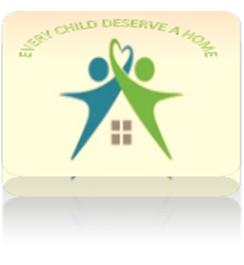

<!DOCTYPE html>
<html lang="en">
<head>
    <meta charset="UTF-8">
    <meta name="viewport" content="width=device-width, initial-scale=1.0">
    <title>Page 3 of Home4all</title>
</head>
<link rel="stylesheet" href="styles/page3.css">

<body>
    <div id="content"></div> 
</body>
</html>
<header>
    <a id="logo_link" href="index1.html">
        
    </a>
    <nav>
        <a href="index1.html" target="_blank">Home</a>
        <a href=">Home4all2.html 2" target="_black">Home4all 2</a>
        <a href="page3.html" target="_blank">Home4all 3</a>
        <a href="site-plan.html" target="_blank">Site Plan</a>
        <a href="contactus.html" target="_blank">Contact Us</a>
    </nav>
</header>

<div id="main">
    <div id="hero-box">
        
    </div>
    <section id="home">
        <h1 class="home-title">WE CAN GIVE THEM A SENSE OF BELONGING</h1>
        <div="p"></div>
        <P>Providing Shelter, Food, Clothing, Education and hope for the fatherless, the motherless and homeless children in the society</P>
    </div>
        <h4>Together, Let's Make A Difference In Their Lives  </h4>
        
        
        <h2>Become A Volunteer</h2>
        <p class="co">
        Be a part of the change you want to see.<br>Let's join hands  together to make the  <br> world a better place for this children.</P>
        <div class='button-box'>
            <a class='j' href="Joinus.html">Join Us</a>
        </div>
    </section>
  </div>
     
      </section class="o">
         <h2>Our Story</h2>
         <p class="our"
       <br> SB Children's Home is a place of love, care, <br> and support for children in need. Here, they can find a<br> second family, with house moms and dads, staff, and volunteers who <br> are dedicated to providing for their every need.

        At SB Children Home, children are <br> given the chance to thrive and grow, with access to warm showers,  nutritious meals, clean clothes, <br> and medical care.  All the children attend school outside the home in an effort to assimilate  them back to <br> the community over time. But SB is so much more than just  a place to live. Its a place  where <br>children  can feel safe, loved and valued, surrounded by  a community of people who care <br> about their well-being and future.  It’s a place where children can learn, grow, and <br> build the foundations for a bright and successful future. And it’s all thanks <br> to the dedicated staff, volunteers, and donors at Upendo Kids Village.</P>

 


        </main>
        <footer>
            <p id="H">Home4All &copy; 2023 - Children's Home </p>
            <p><a href="site-plan-rafting.html">Site Plan</a></p>
            <p><a href="contactus.html">Contact Us</a></p>
            <div class="social">
                <a href="https://facebook.com" target="_blank">
                    
                </a>
                <a href="https://twitter.com" target="_blank">
                    
                </a>
                <a href="https://instagram.com" target="_blank">
                    
                </a>
            </div>
        </footer>
        </body>
        </html>


          